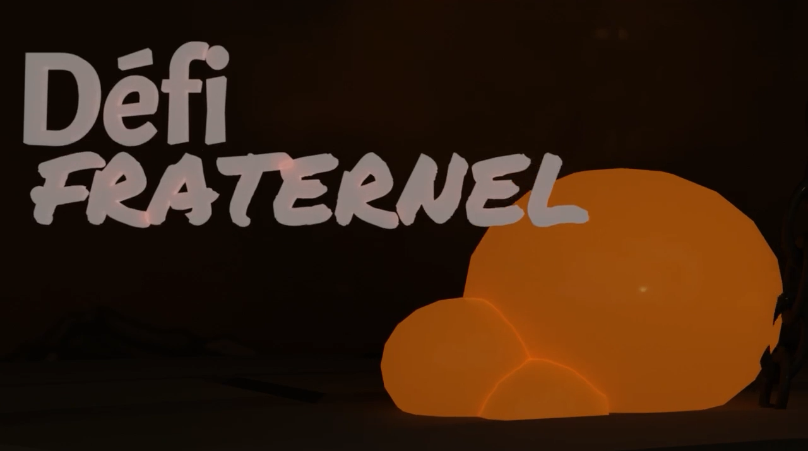

Défi Fraternel
Description du projet :
Une animation sur un de mes jeux préférés ; Hollow Knight. J'ai voulu créer des personnages en 3D basés sur ceux du jeu de plateforme 2D.
Personnages par: Team Cherry